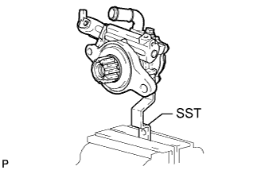
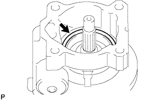

ЛОПАСТНОЙ НАСОС (для моделей с 1KD-FTV) > РАЗБОРКА |
| 1. ЗАКРЕПИТЕ ЛОПАСТНОЙ НАСОС В СБОРЕ |
|  |
С помощью SST зафиксируйте лопастной насос в сборе в тисках.
| 2. СНИМИТЕ ШТУЦЕР КАНАЛА ВСАСЫВАНИЯ |
Отверните болт и снимите штуцер канала всасывания.
Снимите кольцевое уплотнение со штуцера впускного отверстия.
| 3. СНИМИТЕ ЗАДНИЙ КОЖУХ ЛОПАСТНОГО НАСОСА |
Выверните 4 болта и снимите задний кожух лопастного насоса.
Снимите кольцевое уплотнение с заднего кожуха лопастного насоса.
| 4. СНИМИТЕ РОТОР ЛОПАСТНОГО НАСОСА |
Снимите 10 пластин лопастей лопастного насоса.
Снимите ротор лопастного насоса.
| 5. СНИМИТЕ СТОПОРНОЕ КОЛЬЦО ЛОПАСТНОГО НАСОСА |
Снимите стопорное кольцо лопастного насоса с переднего кожуха лопастного насоса.
| 6. СНИМИТЕ ПЕРЕДНЮЮ БОКОВУЮ ЗАЩИТНУЮ ШАЙБУ ЛОПАСТНОГО НАСОСА |
Снимите переднюю боковую защитную шайбу лопастного насоса с переднего кожуха лопастного насоса.
 |
Снимите кольцевое уплотнение с передней боковой защитной шайбы лопастного насоса.
|  |
Снимите кольцевое уплотнение с переднего кожуха лопастного насоса.
| 7. СНИМИТЕ ШЕСТЕРНЮ ЛОПАСТНОГО НАСОСА |
С помощью отвертки снимите пружинное стопорное кольцо с переднего кожуха лопастного насоса.
Обмотайте зубчатую часть вала лопастного насоса защитной лентой.
| *1 | Пресс |
| *2 | Защитная клейкая лента |
С помощью пресса извлеките вал лопастного насоса из переднего кожуха лопастного насоса.
Установите торцевой ключ (12 мм) на вал лопастного насоса.
| *1 | Пресс |
| *2 | Торцевой гаечный ключ (12 мм) |
С помощью SST и пресса снимите шестерню лопастного насоса с вала лопастного насоса.
| 8. СНИМИТЕ ПОДШИПНИК ВАЛА ЛОПАСТНОГО НАСОСА |
С помощью SST и пресса снимите подшипник вала лопастного насоса с вала лопастного насоса.
| *1 | Пресс |
 |
С помощью съемника стопорных колец снимите пружинное стопорное кольцо с вала лопастного насоса.
| 9. СНИМИТЕ САЛЬНИК КОЖУХА ЛОПАСТНОГО НАСОСА |
При помощи SST снимите сальник кожуха лопастного насоса с переднего кожуха лопастного насоса.
| *a | Удерживайте |
| *b | Поверните |